Stealc
Info-Stealer
This report provides a detailed analysis of the Stealc info-stealer malware,
Stealc is a packed malware that exfiltrates sensitive information such as personal credentials, crypto wallets, browser data, system information, user files, and etc. from infected systems.
Finally, it DOESN'T have any persistence mechanism and deletes itself after execution and completion of the theft script.
The analysis includes examining its behavior, and identifying indicators of compromise (IOCs) for detection and mitigation.
The analysis includes observations of all steps from very beginning to the end, including:
PEB using, unpacking, obfuscation, Windows API calls, registry modifications,
network communications with command-and-control (C2) servers,
and the execution flow of the malware.
Sample Identification
Initial Observation
- The original packed sample was identified as a dropper for the Stealc info-stealer. It was manually unpacked to reveal the dropper's behavior, including registry modification, payload download, and execution.
- Packed sample of Stealc info-stealer was analyzed.
- Manual unpacking was performed using x64dbg, with VirtualAlloc traced to observe memory allocation.
- The dropper's PE image was dumped from process memory.
Imported Libraries & Functions
Networking-related functions.
Shell execution functions.
Registry Manipulation
| API | Observed use |
|---|---|
| RegCreateKeyExA | Creates the observed registry key. |
| RegSetValueExA | Sets the installation marker. |
Registry Activity
Network Activity
Observed remote endpoints used by the dropper for payload delivery:
Additional Payloads
Downloads BroomSetup.exe after fetching syncUpd.exe.
Execution Flow
After download, the dropper executes syncUpd.exe(u5vg.0.exe) and
BroomSetup.exe(u5vg.1.exe) via ShellExecuteExA.
Behavioral Summary
| Behavior | Observed Activity |
|---|---|
| Registry Modification | Registry key creation establishes an installation marker. |
| Payload Delivery | Connects to multiple remote endpoints to fetch executables. |
| Execution | Uses Shell32 API to execute dropped files. |
| Stealth / Packing | Packed sample required manual unpacking to reveal dropper logic. |
MITRE ATT&CK
| ID | Indicator |
|---|---|
| T1112 | [Modify Registry] Windows Registry Key Creation |
| T1112 | [Modify Registry] Windows Registry Key Creation |
| T1105 | [Ingress Tool Transfer] Remote Payload Download |
| T1027.002 | [Obfuscated Files or Information / Stealth] Software Packing |
Indicators of Compromise
| Category | Indicator |
|---|---|
| Registry Key | HKCU\Software\BroomCleaner |
| Registry Value | Installed = 1 |
| Network | 185.172.128.59 - RU |
| Network | 185.172.128.90 - RU |
| Network | 185.172.128.228 - RU |
| Dropped File | C:\Users\<[username]>\AppData\Local\Temp\u5vg.0.exe (The first PE file [syncUpd.exe] from endpoint) |
| Dropped File | C:\Users\<[username]>\AppData\Local\Temp\u5vg.1.exe (The second PE file [BroomSetup.exe] from endpoint) |
This report records the observations and indicators supplied for the analyzed sample.
Initial Observation
- First of all, the original packed sample was identified as a dropper for the Stealc info-stealer. This report contains a detailed static and dynamic analysis of the sample, including its unpacking process and behavioral characteristics.
Static Analysis
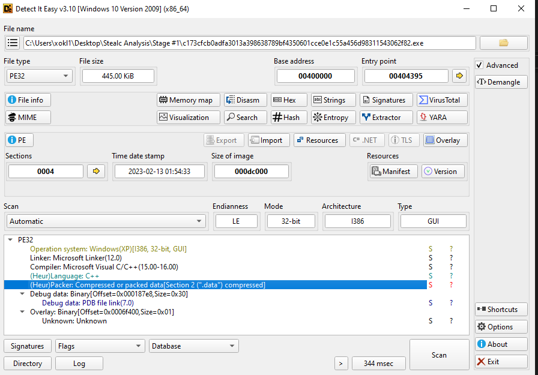
Here it is clearly seen that the sample is written in C/C++, has a high entropy, and exhibits typical characteristics of a packed executable.
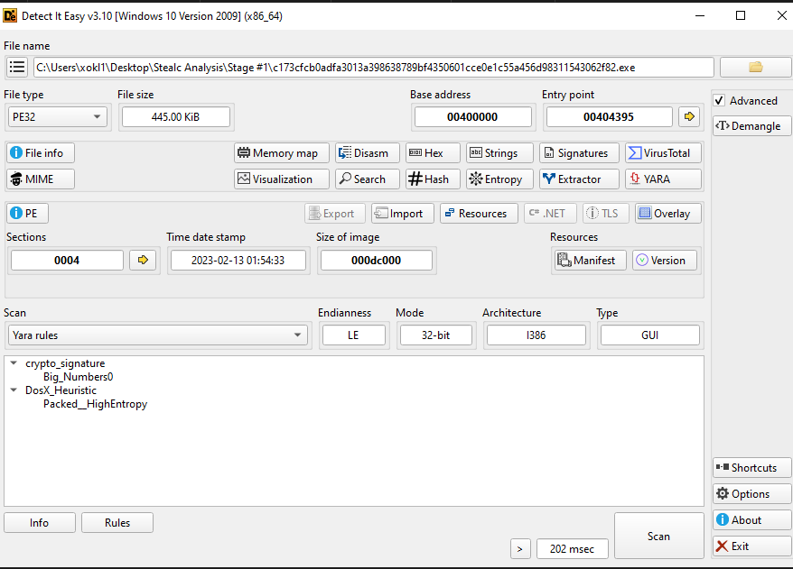
Yara rules for detecting cryptographic operations in the sample. It is explicitly seen that there are multiple crypto signatures.
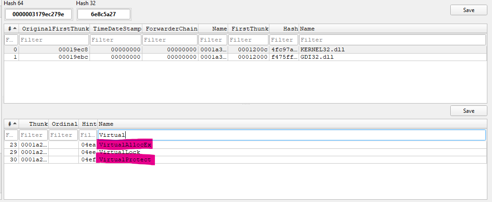
Frequently, a packer allocates and changes memory using Virtual* functions to prepare a space for the unpacked code. So, it is nessary to trace the VirtualAlloc, VirtualProtect, and other related functions such as LocalAlloc, HeapAlloc and etc. to determine where the unpacker is going to write the code.
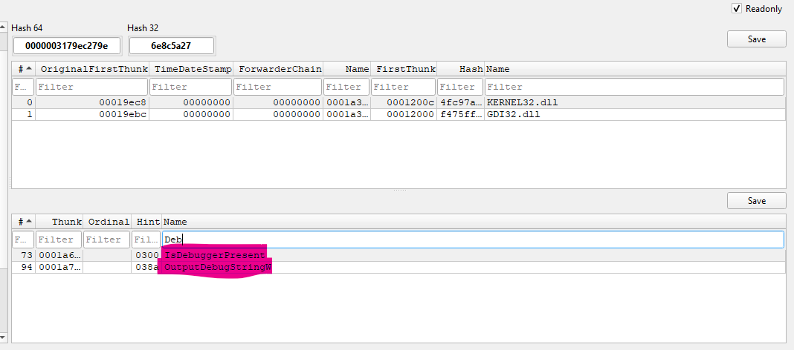
These are the imports associated with debugger detection mechanisms - old and ineffective approaches.
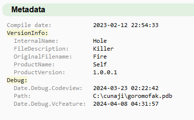
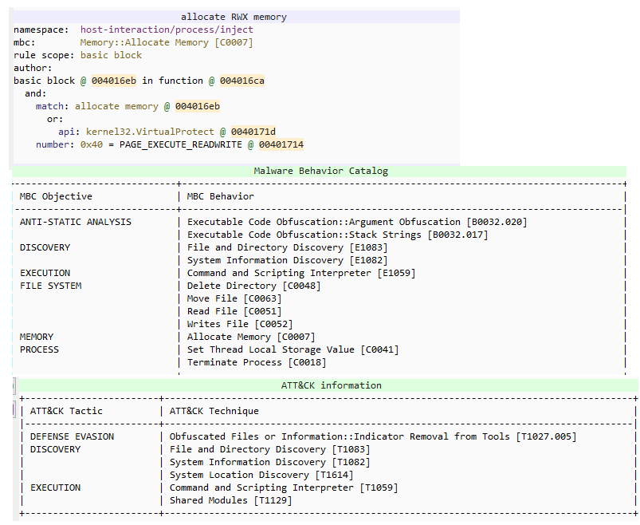
CAPA analysis indicates the presence of dynamic RWX allocation in the sample.
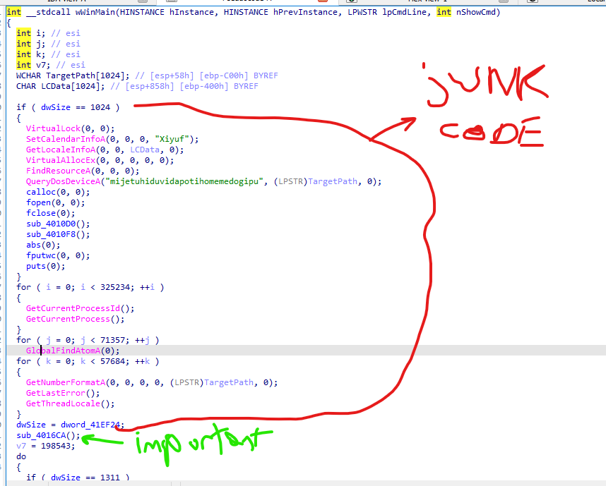
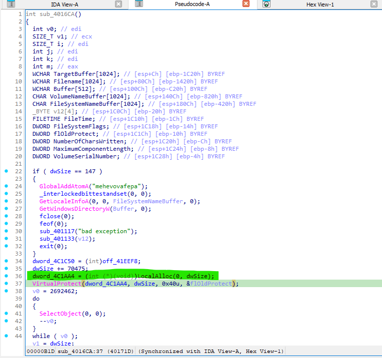
Figure 1.1 illustrates the local allocation and virtual protect calls WITH PAGE_EXECUTE_READWRITE (0x40u) argument.
LocalAlloc allocates memory and its address is assigned to a dword_4C1AA4 variable, keep it in mind for later analysis.
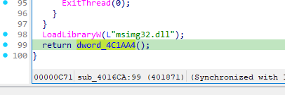
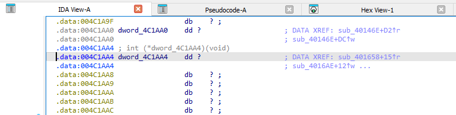
Finally, in Figure 1.2, a function is called via dword_4C1AA4, which has not been assigned a value yet. Therefore, let's proceed with dynamic analysis.
Dynamic Analysis
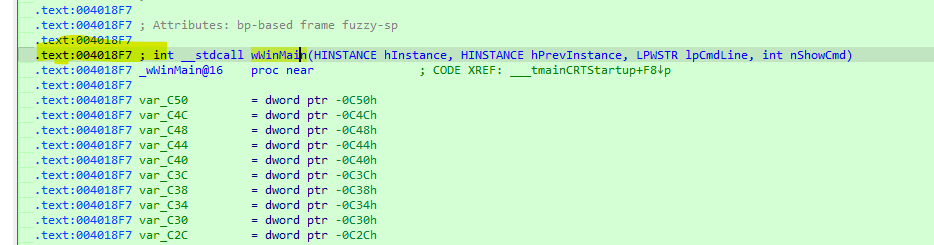
In Figure 1.4, it is showed that wWinMain function starts at 0x004018F7 address. Since ASLR is disabled for this executable, it's possible to copy and just paste that address in the x32dbg and find the function during dynamic analysis.
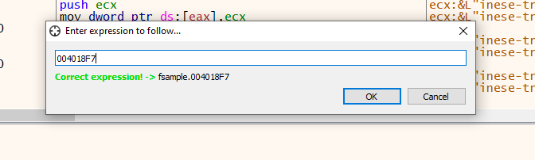
In Static Analysis table and in IDA Pro column, Figure 1.5 illustrated wWinMain function in the form of pseudocode, there was sub_4016CA function that needs to be analyzed, therefore the goal is to find the exact function calling in x32dbg. Let's proceed to Figure 1.7
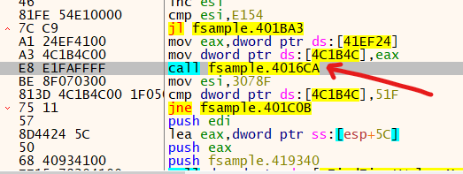
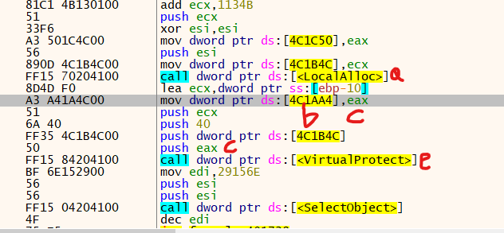
a. LocalAlloc was called,
b. dword_4C1AA4,
c. LocalAlloc return value(address for shellcode) was moved to [b],
e. VirtualProtect with RWX [0x40] as an argument.
Let's continue with setting breakpoints at key instructions
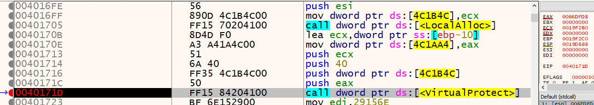
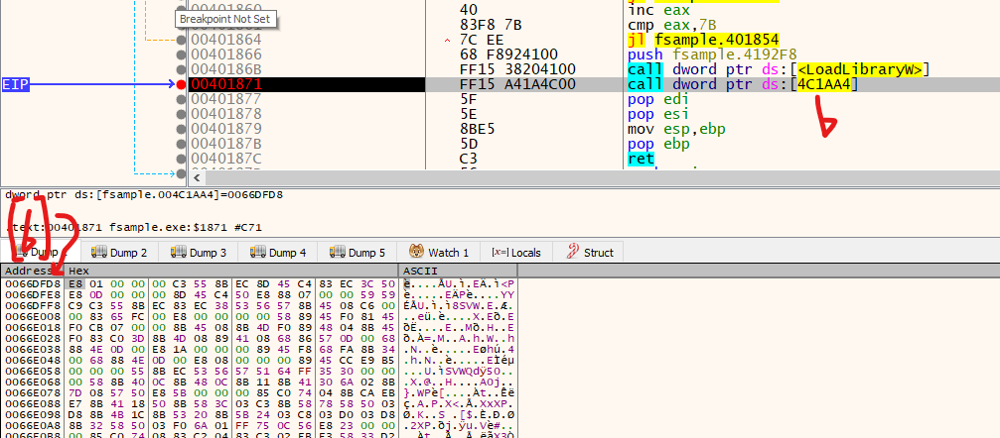
As seen in Figure 2.0, breakpoint at 0x401871 was triggered
and dword_0x4C1AA4 holds the value 0x66DFD8 at the moment.
Supposedly, the shellcode located at 0x66DFD8 is the unpacker's code.
Let's move on to this code in x32dbg Disassemler.
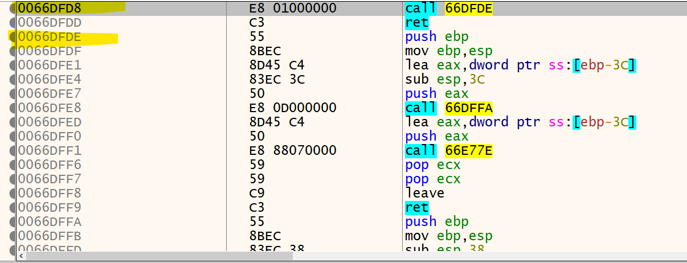
To analyze the behavior of this code, it is necessary to dump the entire memory region. Let's find out at which memory area the code is located by using x32dbg Memory Map.

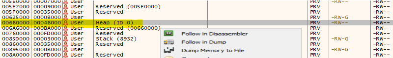
Once the memory dump was obtained, Floss was used to extract any useful string from the dump file.
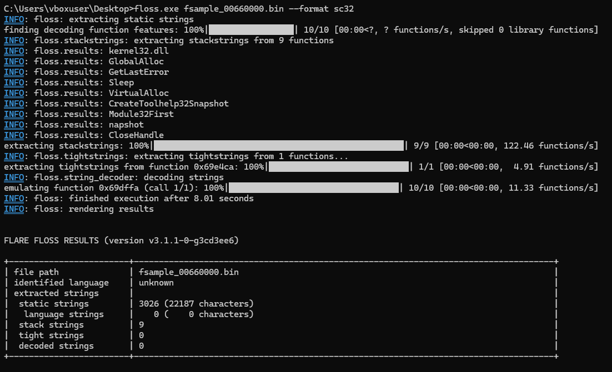
It's clearly showed that there were used a few noticeable Win API functions:
VirtualAlloc, CreateToolhelp32Snapshot, Module32First
Now, there is a hint about what is going to do that dumped code.